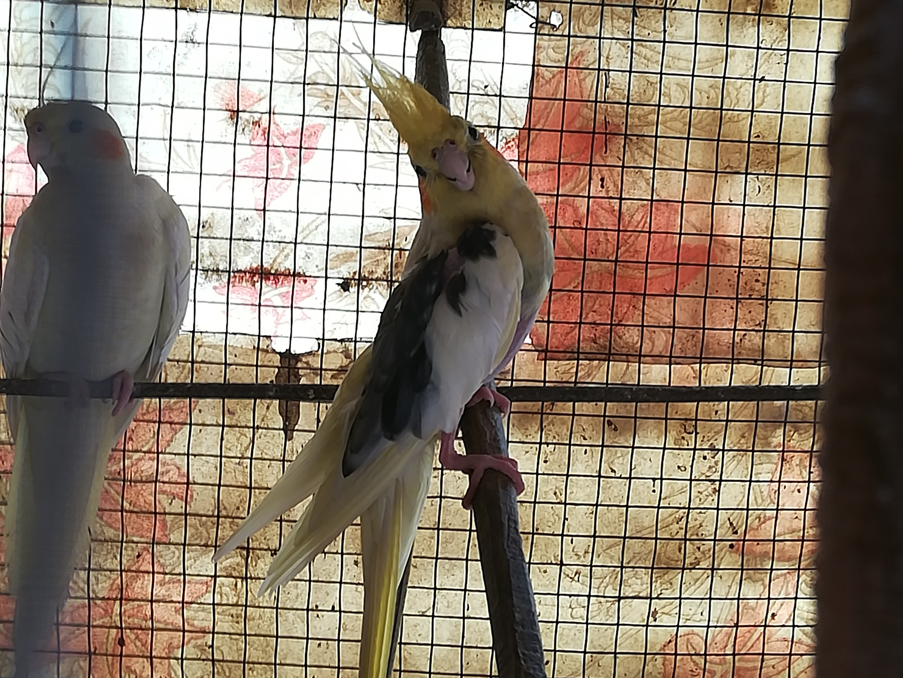
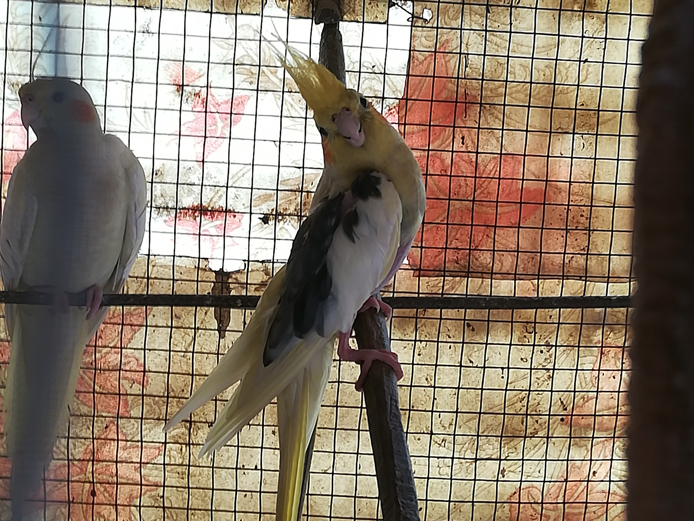

My name is Shardul Vankar. My hometown is Pune. I have done MCA from Pune University in 2017 prior to that I have done BCA from the same University in 2014.
I am a food lover. Also like to explore places in nature and love to travel.
Comming to technical field was a very blessed thing for me because then I found that this is a field where I love to spend my life in working and exploring.
My aim is to become an entrepreneur in future in software industry.
I like to play cricket, snooker, football and also newly found hobby is photography.
Few photos I have attached to this web page.
 

Projects During College:
A) I have also worked with ITSource technologies for my internship project based on TDT
Execution System using ASP.Net, SQL and Bootstrap. It consist of following modules:
1. Admin register staff and student.
2. Schedule batches for staff and students.
3. Staff can view batches and students which are assigned to them.
4. Staff conducts test for students and gets the marks by auto calculation.
5. Staff can see results of all student assigned to them.
6. Student can give test and view results.
B) Also worked on the project in T.Y MCA for Online FIR Lodge using asp.net c#.
1. This is also an online project where a complainer can lodge a complaint online
rather than going to police station.
2. There are the categories given to customer like it’s a criminal complaint or civil
complaint or domestic complaint or lost mobile, vehicle complaint, etc.
Accordingly a complainer can choose the option and lodge the complaint. This
was the complainer scope.
3. We have also created an operator who scrutinize the complaints and give it to the
police accordingly and give the status to complainer to his complaint.
4. We also used status tracer in this project so that a complainer can track his
complaint.
5. We also created accounts for police who can log in and can work upon the
complaints.
C) I have worked on the project in S.Y MCA for Online Banking System using JSP,
HTML, CSS and JavaScript.
1. This is an online project where a customer of a bank could create his account
where he can see his balance, transfer money, can see mini statement, add
beneficiary, etc. This was the scope of customer.
2. While deposit of money can’t be a scope of Online Banking. Customer has to go
physically and has to deposit the amount at the cashier counter.
3. But what we have tried to do is, we have created the scope of cashier also where
he can use the account no. of customer and can enter the amount what customer
has given and can update the customer balance and also the mini statement.
Experience:
-> Overall 2 months of experience in industry.
-> I was working in a company for the role of Process Associate wherein I was
working on the tools such as Jira, Network Administrative System, Customer Portal
for ticket raising and resolving.
-> I also developed a tool for my account where I created the escalation matrix in ASP.NET
using C#.